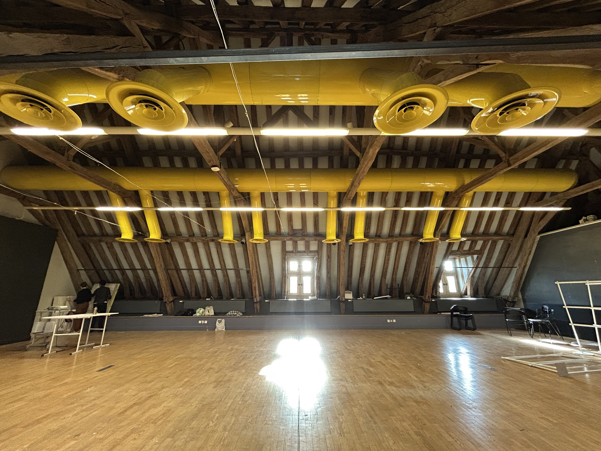
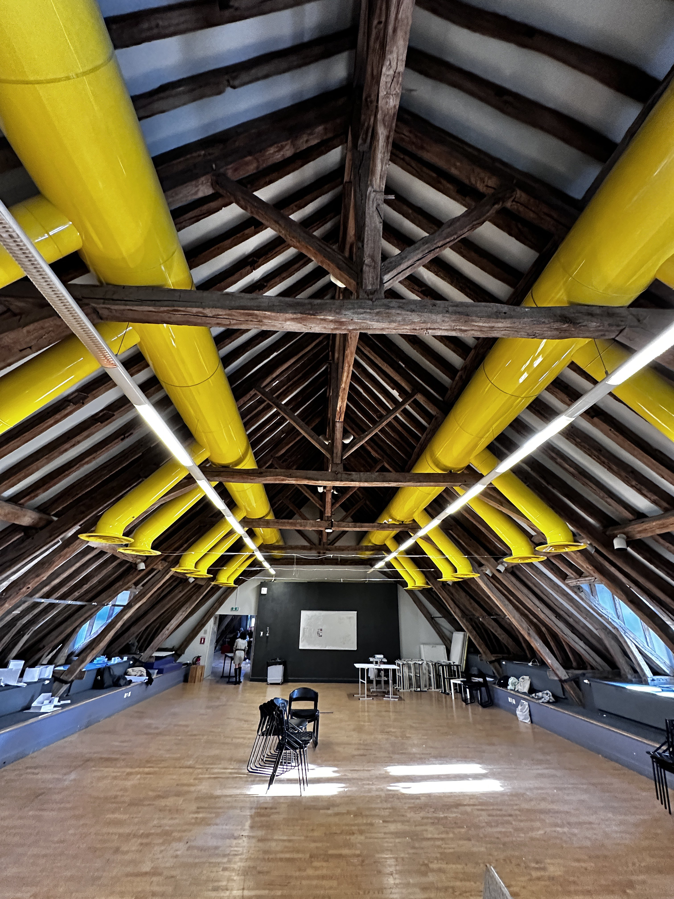
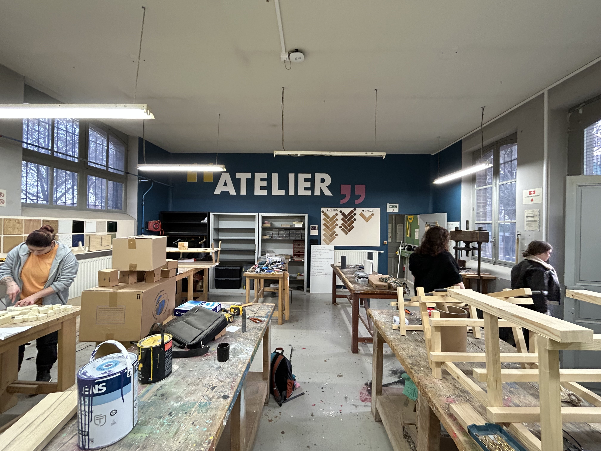
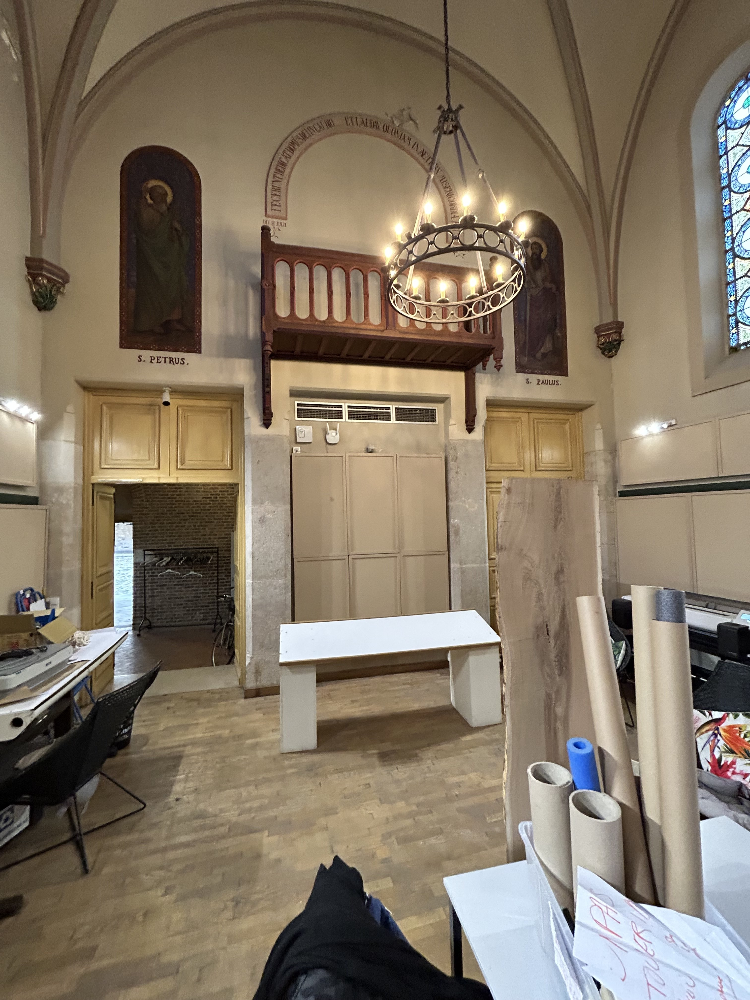
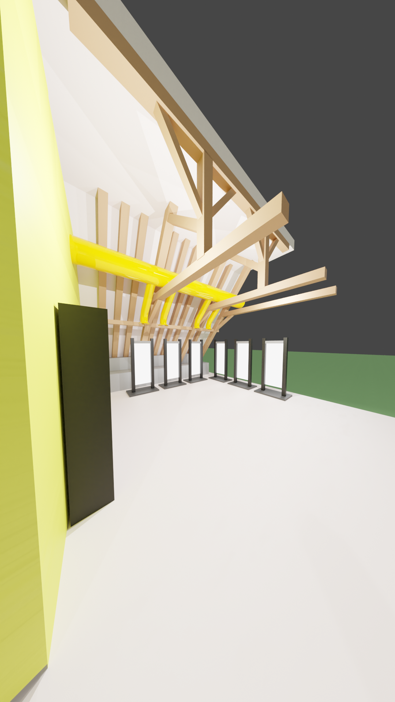
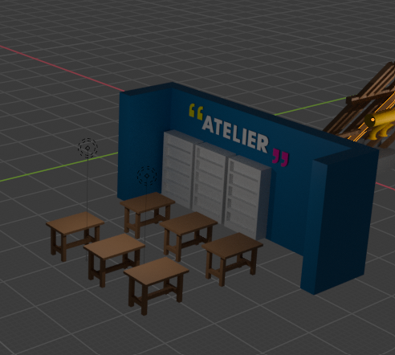
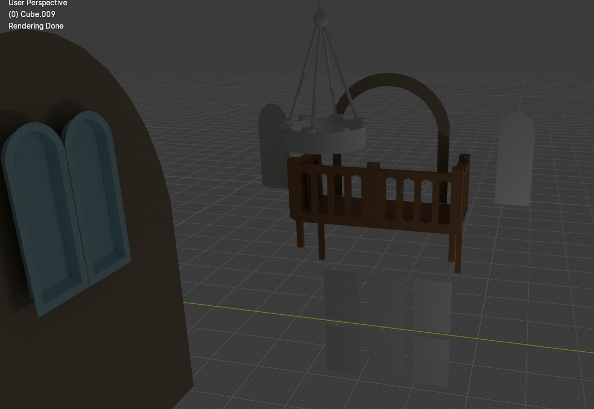
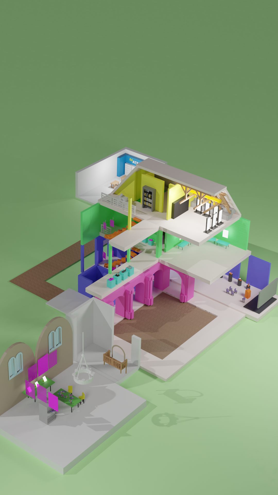

In groups of 4, we had a week to model the school in the style of an imposed reference, resulting in two animations. These animations will be shown at open days to present the building and workshops to visitors.
First, we took photo references of the rooms, objects and evacuation plans.




Secondly, I modeled the rooms, which we then assembled to create a building.



We defined a palette of pastel colors.

Finally, we animated the scene and created poster formats with text.
As there was still time, I also remodeled the Portes Ouvertes logo into an animated version.